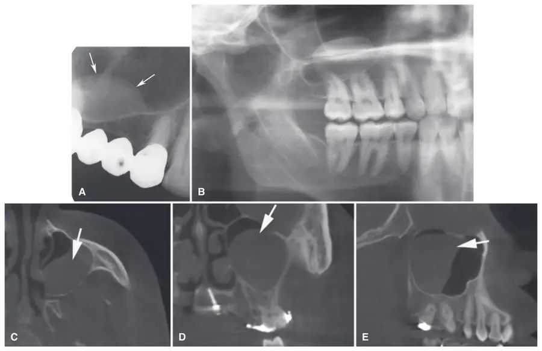
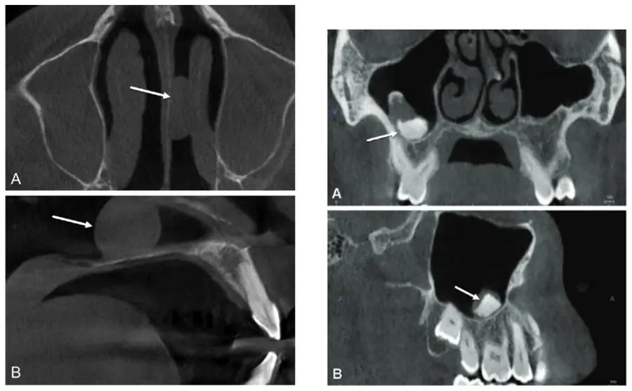

نسخه استخراجشده؛ ترجمه یا تأیید علمی انجام نشده است. وضعیت: captured
کیست کاذب احتباسی شایعترین تودهای است که در سینوس خواهی دید — و بیشترین درمان بیمورد را هم میگیرد. اصطلاحی است برای چند وضعیت مرتبط که به ضایعات کیستمانندِ فاقد پوشش اپیتلیالی میانجامند.

و دو نظریه دربارهی پیدایشش: یکی میگوید انسداد مجاری ترشحی غدد سرومکوس مخاط سینوس به تجمع پاتولوژیک ترشحات زیرمخاطی و تورم بافت میانجامد؛ دیگری میگوید از دژنراسیون کیستیک درون یک پوشش سینوسی ملتهب و ضخیمشده برمیخیزد.
و رفتار بالینیاش، غریب و آموزنده است: «بهندرت علامتی میسازد و بیمار معمولاً از وجودش بیخبر است.» در هر فصلی دیده میشود، ولی شاید در اوایل بهار و پاییز بیشتر باشد، و در مردان شایعتر است. میتواند از بسیار کوچک تا اندازهای باشد که کل حفرهی سینوس را پر کند. اگر کامل پر کند، ممکن است از اُستیوم بیرون بزند و انسداد بینی بسازد. و «ممکن است بر اثر تغییرات ناگهانی فشار ناشی از عطسه یا فین کردن پاره شود» و ترشح پشتبینی بسازد. حتی میتواند «در یک معاینهی تصویری حاضر باشد و چند روز بعد غایب، و در معاینات بعدی دوباره پدیدار شود».
و مهمترین جملهی این درس برای تصمیم درمانی: «کیستهای کاذب احتباسی در سینوس ماگزیلاری هیچ درمانی لازم ندارند، چون معمولاً خودبهخود برطرف میشوند بدون هیچ اثر باقیماندهای بر مخاط آنترال.» و «کیستهای کاذب احتباسی آنترال به کشیدن دندان مربوط نیستند و با بیماری التهابی پریاپیکال همراه نیستند».
و ظاهر تصویری: معمولاً تودههای رادیواوپک خوشمرز، عمدتاً سسیل، بدون کورتیکاسیون، صاف و گنبدیشکل. «چون ضایعه از درون سینوس برمیخیزد، فاقد مرز کورتیکهی رادیواوپک است.» معمولاً روی کف سینوس تشکیل میشوند، هرچند میتوانند روی هر دیواره یا سقف باشند.
و اثرش بر مجاورتها، دقیقاً هیچ: «هیچ اثری بر ساختارهای اطراف ندارد. کف سینوس مجاور همیشه سالم است.» و دربارهی دندان: «وقتی کیست کاذب احتباسی مجاور ریشهی یک دندان باشد، لامینا دورای اطراف ریشه سالم است و عرض فضای لیگامان پریودنتال بدون تغییر.»
و افتراق طلایی از کیست ادنتوژنیک: «کیست کاذب احتباسی گنبدیشکل است ولی خط رادیواوپک نازک حاشیهای را که نمایندهی مرز کورتیکهی مشخصهی کیست یا نئوپلاسم ادنتوژنیک است ندارد.»
و حالا پولیپ — که با یک نشانه از کیست کاذب جدا میشود: مخاط سینونازال ملتهب مزمن اغلب به چینهای نامنظمی به نام پولیپ درمیآید. «پولیپ روی تصویر با این نکته از کیست کاذب احتباسی تفکیک میشود که پولیپ همراه با پوشش مخاطی ضخیمشده رخ میدهد، چون تودهی پولیپوئید چیزی جز تشدید همان ضخیمشدگی مخاطی نیست.
در کیست کاذب، مخاط مجاور معمولاً آشکار نیست.» و «اگر چند کیست کاذب درون یک سینوس دیده شود، باید احتمال پولیپوز سینوسی در نظر گرفته شود».
و پولیپ برخلاف کیست کاذب، میتواند استخوان بشکند: «پولیپها میتوانند جابهجایی یا تخریب استخوان بسازند.» در سلولهای اتموئید میتوانند لامینا پاپیراسه را تخریب کنند و پروپتوز همان سمت بسازند. و یک هشدار صریح: «معاینهی سینوسی که تخریب استخوان همراه با تودهی بافت نرم نشان میدهد، اندیکاسیون تصویربرداری تکمیلی و بیوپسی است؛ مدیریت نباید با درمان محافظهکارانهی اولیه به تأخیر بیفتد.»
و آنترولیت — سنگ سینوس: از رسوب املاح معدنی مانند فسفات کلسیم، کربنات کلسیم و منیزیم دور یک هسته ساخته میشود. درونزا است وقتی موکوس راکد یا غلیظشده یا دبری سلولی در محل التهاب قبلی جمع شود؛ و برونزا وقتی مادهای بیرونی وارد سینوس شده باشد.
و ظاهرش: محیط خوشمرز با شکل صاف یا نامنظم؛ ساختار داخلی از یک رادیواوپسیتهی بهسختی قابل درک تا ساختاری بهشدت رادیواوپک، همگن یا ناهمگن، و گاهی با لایههای متناوب رادیولوسنت و رادیواوپک به شکل لامیناسیون.
و دو کلید افتراقش از قطعهی ریشه: بررسی توده برای آناتومی معمول ریشه، مانند حضور کانال ریشه، و اینکه «قطعهی ریشهی جابهجاشده در سینوس، مگر آنکه میان استخوان و پوشش سینوس گیر کرده باشد، هنگام تصویربرداری با وضعیتهای مختلف سر حرکت میکند». و راینولیت همین کلسیفیکاسیون است ولی درون حفرهی بینی.
موکوسل برخلاف کیست کاذب، تودهای تخریبی است: «ضایعهای گسترشیابنده و تخریبی که از انسداد اُستیوم سینوس ناشی میشود... و کل سینوس به حفرهی پاتولوژیک تبدیل میشود.»

و سازوکارش زنجیرهای است: انسداد (از التهاب داخلآنترال یا داخلبینی، پولیپ، کیست ادنتوژنیک یا نئوپلاسم) ← تجمع ترشحات موکوسی ← افزایش فشار درون حفره ← نازک شدن و جابهجایی دیوارههای سینوس و گاهی تخریب دیواره. و اگر حفره از چرک پر شود، نامش آمپیم، پیوسل یا موکوپیوسل میشود.
و تصویر بالینیاش با فشار توضیح داده میشود: موکوسل ماگزیلاری میتواند بر اعصاب آلوئولار فوقانی فشار بیاورد و درد انتشاری بسازد. بیمار نخست از احساس پری در گونه شکایت میکند و ناحیه ممکن است متورم شود — «این تورم نخست روی جنبهی قدامی-تحتانی آنتروم آشکار میشود، جایی که دیواره نازک یا تخریبشده است». اگر به پایین گسترش یابد، لق شدن دندانهای خلفی مجاور؛ اگر دیوارهی داخلی گسترش یابد، انسداد راه هوایی بینی؛ و اگر به اوربیت گسترش یابد، دیپلوپی یا پروپتوز.
و محل موکوسل خلاف انتظار دندانپزشک است: «حدود ۹۰٪ موکوسلها در سلولهای هوایی اتموئید و سینوسهای فرونتال رخ میدهند؛ در سینوسهای ماگزیلاری و اسفنوئید نادرند.»
و ظاهر تصویری: «شکل طبیعی سینوس با بزرگ شدن موکوسل به شکلی دایرهایتر و هیدرولیک تغییر میکند.» ساختار داخلی بهطور یکنواخت رادیواوپک. و اثر بر مجاورتها: مرزها به بیرون رانده میشوند و استخوان گسترش مییابد؛
سپتاها و دیوارههای استخوانی میتوانند بهشدت نازک شوند؛ در آنتروم ماگزیلاری دندانها جابهجا یا ریشهها تحلیل میشوند؛ در سینوس فرونتال اسکالوپینگ مرز از دست میرود؛ در سلولهای اتموئید لامینا پاپیراسه جابهجا میشود و محتویات اوربیت را جابهجا میکند.
و افتراقش دشوار است، ولی یک سرنخ دارد: «هرچند ممکن است تفکیک موکوسل آنتروم ماگزیلاری از کیست یا نئوپلاسم ناممکن باشد، هر نشانهای از اینکه ضایعه با یک اُستیوم مسدود همراه است، احتمال موکوسل را تقویت میکند.» و انسداد اُستیوم معمولاً نتیجهی یک عمل جراحی پیشین است. و یک ترفند عملی: در برابر کیست ادنتوژنیک بزرگی که کف سینوس را جابهجا کرده، «باید دنبال باقیماندهی فضای هوایی میان دیوارهی کیست و دیوارههای آنتروم گشت».
و توپ قارچی — با یک همراهی که مستقیماً به کار دندانپزشک میآید: شکل غیرمهاجم مایکوز است که از «گیر افتادن و رشد هایف و اسپور قارچ درون سینوس» پدید میآید و با عملکرد غیرطبیعی مژههای مخاطی همراه است. شایعترین قارچها: آسپرژیلوس فومیگاتوس و فلاووس، آلترناریا، و سودآلشریا بویدی.
و همان همراهی: «جالب آنکه حضور توپ قارچی در سینوس ماگزیلاری با درمان اندودانتیک دندانهای ماگزیلا و استفاده از سیلرهای اندودانتیک حاوی روی همراه بوده است.»
و پروفایلش: معمولاً در افراد مسنتر (۶۰ تا ۷۰ سال)، با دامنهی سنی گسترده (۲۸ تا ۸۶). معمولاً تنها یک سینوس را درگیر میکنند، بیشتر ماگزیلاری و کمتر اسفنوئید. علائم شبیه رینوسینوزیت مزمن است — ترشح بینی، درد، و انسداد بینی — و گاهی بیمار بیعلامت است.
و نشانهی تصویری تفکیککنندهاش: «بیشتر سینوس یک اوپسیفیکیشن یکنواخت با دانسیتهی بافت نرم نشان میدهد. ولی نواحی کانونی مرکزی با تضعیف افزایشیافته ممکن است درون توپ قارچی دیده شوند، که نمایندهی دبری قارچی کلسیفیه، هایف، یا متابولیتهای فلزات سنگین است.» و ضخیم شدن دیوارههای قدامی، جانبی و خلفی سینوس درگیر شایع است.
و میتواند دیوارهی داخلی را فرسوده کند و توده به حفرهی بینی گسترش یابد. تشخیص قطعی با بیوپسی است، و درمان معمولاً برداشت جراحی با ESS بههمراه برقراری دوبارهی تخلیه با آنتروستومی مئاتوس میانی.
نوع سؤال: ساخت کلمه · 8 خانه
حروف منبع: و · ی · ت · ی · ل · ن · ر · ا